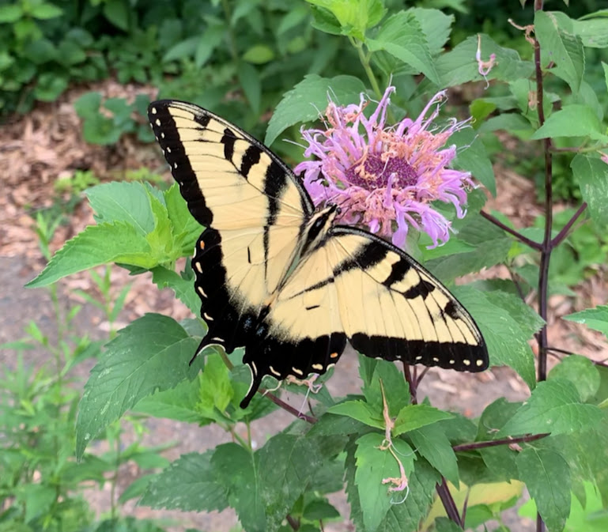

Your Climate-Friendly Backyard

Date: Monday, April 13 — 7:00–8:30 PM (Eastern Time)
Most of us own a little land or have access to community gardens. The home landscape is where we learn how to manage land as a living ecosystem.
Unfortunately, most home landscapes are not managed to support bees, butterflies, birds, or healthy soil. But they can be. When we restore ecological function to our backyards, we create habitat, store carbon and water in the soil, and grow healthier plants.
This can be done with modest effort and very little expense. In fact, it is often easier, cheaper, and more enjoyable than conventional landscaping.
Managing a home landscape as an ecosystem teaches us how nature works. It helps us understand farming and forestry, how plants interact with soil organisms and insects, and how landscapes can help stabilize the climate.
Your backyard can become a living classroom—for you, your neighbors, and your children.
What You Will Learn
- How to obtain free wood chips that suppress weeds and conserve moisture
- How to design a backyard that supports bees, butterflies, and birds
- How soil can store both carbon and water for the benefit of the climate
- How to attract pollinators and beneficial insects
- How to turn your backyard into an ecological field trip
Who Should Attend
Homeowners who want a more beautiful, ecologically rich landscape that supports pollinators, birds, and a cooler climate.
Recording
A recording will be available to everyone who registers.